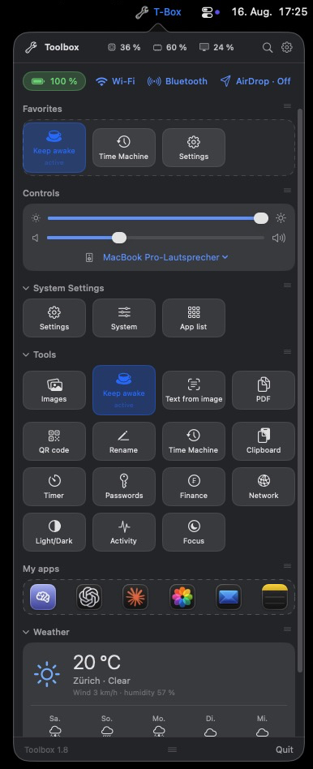
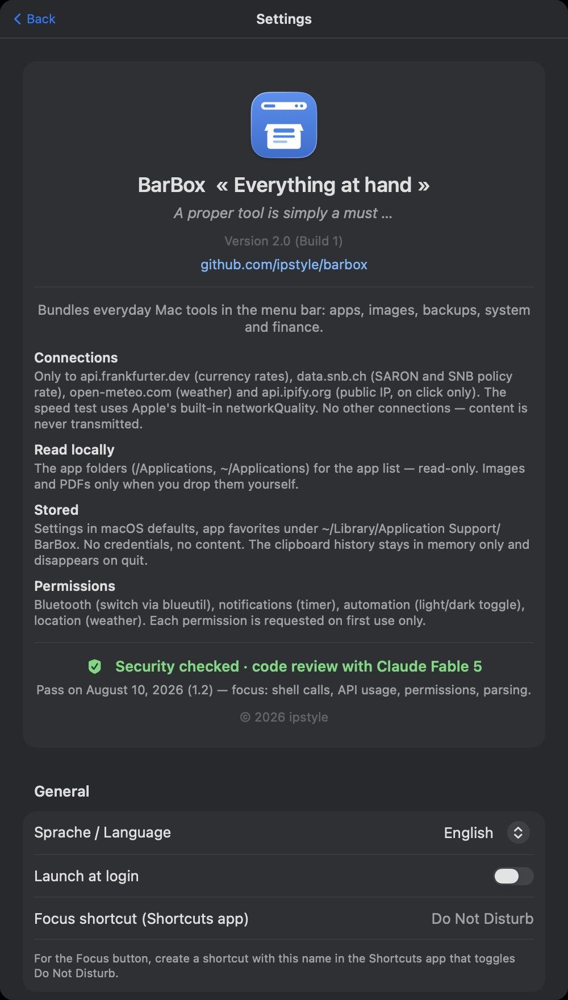
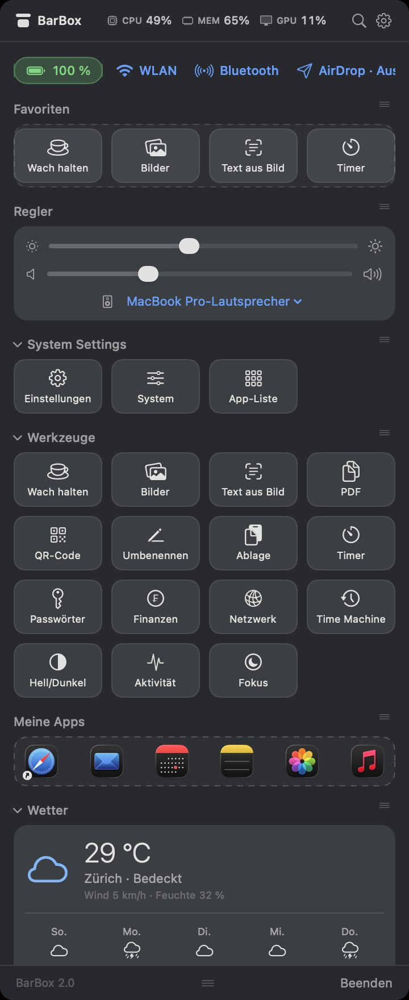

Your everyday toolbox — one click away in the menu bar.



CPU, memory and GPU usage right in the header. Battery, Wi-Fi and Bluetooth status at a glance.
Favorites, app launcher, volume and audio output. Every section collapsible and reorderable, window size adjustable.
English and German interface, switchable in the settings — takes effect immediately.
From the Mac App Store — sandboxed, signed by Apple, updates automatically: apps.apple.com
Or directly from GitHub — same app, plus the extras the sandbox does not allow (display brightness, Wi-Fi and Bluetooth switches, AirDrop, Time Machine, speed test):
BarBox-x.y.zip from the latest release and unzip it.BarBox.app to your Applications folder.xattr -d com.apple.quarantine /Applications/BarBox.app
| Feature | Permission |
|---|---|
| Weather | Location — or set a fallback place in the settings |
| Timer | Notifications |
| Light/dark toggle, Focus | Automation (System Events / Shortcuts) |
| Bluetooth toggle | blueutil plus Bluetooth permission |
Every permission is requested only when the matching feature is used for the first time.
No accounts, no tracking, no analytics, no third-party SDKs. The developer receives no data at all. Network requests go only to four public services — weather, currency rates, Swiss interest rates and a public-IP lookup — and carry no identifier.
Read the full privacy policy →
Questions, bug reports and ideas belong in the issue tracker — that is the fastest way to reach the developer:
github.com/ipstyle/barbox/issues
Only the Xcode command line tools are required (Swift 5.9+), no Xcode project:
git clone https://github.com/ipstyle/barbox.git cd barbox ./build.sh open build/BarBox.app